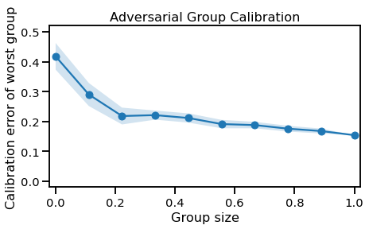
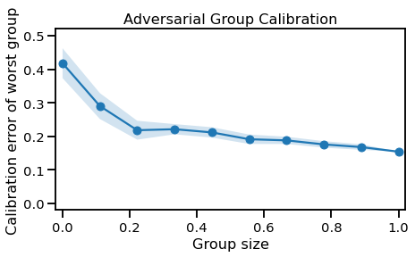

Sim-Real Data Experiment#
import sys, os
sys.path.append("/home/emmanuel/code/isp_data")
sys.path.append("/home/emmanuel/code/gp_model_zoo/code/numpyro")
from jax.config import config
from jax import device_put
import jax.numpy as jnp
# from jax import random
# import numpy as np
# import chex
config.update("jax_enable_x64", False)
# plot methods
import matplotlib.pyplot as plt
import seaborn as sns
sns.reset_defaults()
sns.set_context(context="talk", font_scale=0.9)
%matplotlib inline
%load_ext lab_black
%load_ext autoreload
%autoreload 2
# ==========================
# INITIALIZE LOGGER
# ==========================
import wandb
wandb_logger = wandb.init(project="egp_1_1", entity="ipl_uv")
Failed to detect the name of this notebook, you can set it manually with the WANDB_NOTEBOOK_NAME environment variable to enable code saving.
wandb: Currently logged in as: ml4floods (use `wandb login --relogin` to force relogin)
wandb: wandb version 0.10.31 is available! To upgrade, please run:
wandb: $ pip install wandb --upgrade
Tracking run with wandb version 0.10.30
Syncing run eager-wildflower-13 to Weights & Biases (Documentation).
Project page: https://wandb.ai/ipl_uv/egp_1_1
Run page: https://wandb.ai/ipl_uv/egp_1_1/runs/7yfd85y7
Run data is saved locally in
Syncing run eager-wildflower-13 to Weights & Biases (Documentation).
Project page: https://wandb.ai/ipl_uv/egp_1_1
Run page: https://wandb.ai/ipl_uv/egp_1_1/runs/7yfd85y7
Run data is saved locally in
/home/emmanuel/documents/research_notebook/research_notebook/content/notes/egps/notebooks/wandb/run-20210610_150809-7yfd85y7wandb.config.exp = "simreal"
wandb.config.seed = 123
Load Demo Data#
from isp_data.simulation import uncertain
X, y = uncertain.load_prosail_training_df()
X.describe()
| Band 1: Blue | Band 2: Green | Band 3: Red | Band 4: NIR | Band 6: SWIR 1.6 | Band 7: SWIR 2.1 | |
|---|---|---|---|---|---|---|
| count | 3303.000000 | 3303.000000 | 3303.000000 | 3303.000000 | 3303.000000 | 3303.000000 |
| mean | 0.068743 | 0.105825 | 0.111666 | 0.362267 | 0.260562 | 0.173583 |
| std | 0.046820 | 0.061809 | 0.079168 | 0.123083 | 0.092832 | 0.094373 |
| min | 0.005332 | 0.006786 | 0.005533 | 0.033154 | 0.033389 | 0.009375 |
| 25% | 0.035533 | 0.060806 | 0.053779 | 0.273694 | 0.194152 | 0.104310 |
| 50% | 0.053992 | 0.089028 | 0.086402 | 0.363865 | 0.252580 | 0.152875 |
| 75% | 0.087720 | 0.134440 | 0.148359 | 0.448729 | 0.317240 | 0.225726 |
| max | 0.279228 | 0.360767 | 0.437059 | 0.766682 | 0.569299 | 0.530368 |
y.describe()
| LAI | FVC | FAPAR | CWC (g/cm2) | CCC (g/cm2) | |
|---|---|---|---|---|---|
| count | 3303.000000 | 3303.000000 | 3303.000000 | 3303.000000 | 3303.000000 |
| mean | 2.262788 | 0.592697 | 0.573906 | 0.040715 | 0.105892 |
| std | 1.853207 | 0.394076 | 0.356829 | 0.047395 | 0.100914 |
| min | 0.000015 | 0.000007 | 0.000010 | 0.000000 | 0.000000 |
| 25% | 0.321631 | 0.157449 | 0.193685 | 0.004334 | 0.011619 |
| 50% | 2.227418 | 0.691581 | 0.680800 | 0.027279 | 0.083860 |
| 75% | 3.640792 | 0.929118 | 0.871570 | 0.058701 | 0.167256 |
| max | 7.764345 | 1.266707 | 1.137658 | 0.506256 | 0.539141 |
import corner
figure = corner.corner(X)
plt.gcf()
wandb.log({"sim_data_X": wandb.Image(plt)})

import corner
figure = corner.corner(y)
plt.gcf()
wandb.log({"sim_data_y": wandb.Image(plt)})
Select Variable#
y = y["LAI"]
Train-Test Split#
# from sklearn.model_selection import train_test_split
# random_state = 123
# train_size = 500
# Xtrain, Xtest, ytrain, ytest = train_test_split(
# X, y.iloc[:, 0], train_size=train_size, random_state=random_state,
# )
Standardization#
from sklearn.preprocessing import StandardScaler
x_transformer = StandardScaler()
X_scaled = x_transformer.fit_transform(X)
y_transformer = StandardScaler(with_std=False)
y_scaled = y_transformer.fit_transform(y.values.reshape(-1, 1))
GP Model#
import chex
import jax
import jax.numpy as jnp
from chex import Array
from src.utils import identity_matrix, add_to_diagonal
from src.kernels import RBF
n_features = X_scaled.shape[1]
rbf_kernel = RBF(length_scale=jnp.ones(n_features), variance=1.0)
K = rbf_kernel.gram(X_scaled)
# check shape
chex.assert_shape(K, (X_scaled.shape[0], X_scaled.shape[0]))
model = "sparse"
wandb.config.model = model
WARNING:absl:No GPU/TPU found, falling back to CPU. (Set TF_CPP_MIN_LOG_LEVEL=0 and rerun for more info.)
Model#
# NUMPYRO SETTINGS
import numpyro
import numpyro.distributions as dist
from numpyro.infer.autoguide import AutoDiagonalNormal
from numpyro.infer import SVI, Trace_ELBO
from src.utils import init_inducing_subsample, init_inducing_kmeans
from src.sparse import init_default_sgp_model
from src.exact import init_default_gp_model
jitter = 1e-5
inference = "map"
n_inducing = 100
n_length_scales = X_scaled.shape[1]
wandb.config.jitter = jitter
wandb.config.inference = inference
wandb.config.n_inducing = n_inducing
wandb.config.n_length_scales = n_length_scales
if model == "exact":
numpyro_model = init_default_gp_model(
n_features=n_length_scales, inference=inference, jitter=jitter
)
elif model == "sparse":
n_inducing = 100
numpyro_model = init_default_sgp_model(
X_scaled,
n_features=n_length_scales,
inference=inference,
n_inducing=n_inducing,
jitter=jitter,
)
else:
raise ValueError(f"Unrecognized model: {model}")
def empty_guide(X, y):
pass
# NUMPYRO SETTINGS
with numpyro.handlers.seed(rng_seed=123):
t = numpyro_model(X_scaled, y_scaled)
assert t.shape == y_scaled.shape
Inference#
from numpyro.infer.autoguide import (
AutoDelta,
AutoMultivariateNormal,
AutoDiagonalNormal,
)
# ===================
# Model
# ===================
# GP model
# delta guide - basically deterministic
if inference == "map":
guide = AutoDelta(numpyro_model)
elif inference == "vi_mf":
guide = AutoDiagonalNormal(numpyro_model)
elif inference == "vi_full":
guide = AutoMultivariateNormal(numpyro_model)
elif inference == "mll":
def empty_guide(X, y):
pass
guide = empty_guide
else:
raise ValueError(f"Unrecognized inference scheme: {inference}")
Training#
# reproducibility
rng_key = jax.random.PRNGKey(0)
# Setup
wandb.config.step_size = 0.01
wandb.config.train_seed = 42
wandb.config.iterations = 2_500
# Setup
optimizer = numpyro.optim.Adam(step_size=0.01)
# optimizer = numpyro.optim.Minimize()
# optimizer = optax.adamw(learning_rate=0.1)
svi = SVI(numpyro_model, guide, optimizer, loss=Trace_ELBO())
svi_results = svi.run(jax.random.PRNGKey(1), 2_500, X_scaled, y_scaled.T)
100%|| 2500/2500 [01:00<00:00, 41.36it/s, init loss: 6679.5601, avg. loss [2376-2500]: 3846.2095]
fig, ax = plt.subplots(figsize=(10, 5))
ax.plot(svi_results.losses)
ax.set(title="Loss", xlabel="Iterations", ylabel="Negative Log-Likelihood")
plt.gcf()
wandb.log({"loss": wandb.Image(plt)})

Extract Params#
from pprint import pprint
# Take them directly
learned_params = svi_results.params
# pprint(learned_params)
if inference != "mll":
if model == "sparse":
x_u = learned_params["x_u"]
learned_params = guide.median(learned_params)
learned_params["x_u"] = x_u
elif model == "exact":
learned_params = guide.median(learned_params)
else:
raise ValueError(f"Unrecognized model: {model}")
# pprint(learned_params)
Predictions#
if model == "sparse":
from src.sparse import init_sgp_predictive
gp_pred = init_sgp_predictive(RBF, learned_params, X_scaled, y_scaled, jitter=1e-5)
elif model == "exact":
from src.exact import init_gp_predictive
gp_pred = init_gp_predictive(RBF, learned_params, X_scaled, y_scaled, jitter=0.0)
else:
raise ValueError(f"Unrecognized model: {model}")
mu = gp_pred.predict_mean(jnp.array(X_scaled))
fig, ax = plt.subplots(figsize=(5, 5))
ax.scatter(mu, y_scaled, alpha=0.1, c="blue")
ax.set(xlabel="Predictions", ylabel="Truth", title="Training Data")
plt.gcf()
wandb.log({"gp_pred_sim": wandb.Image(plt)})

Statistics#
from uncertainty_toolbox import get_all_metrics
mu, var = gp_pred.predict_y(X_scaled)
std = jnp.sqrt(var.squeeze())
import numpy as np
import pandas as pd
metrics = get_all_metrics(
y_pred=np.array(mu).ravel(),
y_std=np.array(std).ravel(),
y_true=np.array(y_scaled).ravel(),
)
wandb.log(metrics)
(1/n) Calculating accuracy metrics
(2/n) Calculating average calibration metrics
10%| | 1/10 [00:00<00:01, 8.48it/s]
(3/n) Calculating adversarial group calibration metrics
[1/2] for mean absolute calibration error
Measuring adversarial group calibration by spanning group size between 0.0 and 1.0, in 10 intervals
100%|| 10/10 [00:01<00:00, 5.70it/s]
10%| | 1/10 [00:00<00:01, 8.03it/s]
[2/2] for root mean squared calibration error
Measuring adversarial group calibration by spanning group size between 0.0 and 1.0, in 10 intervals
100%|| 10/10 [00:01<00:00, 5.50it/s]
(4/n) Calculating sharpness metrics
(n/n) Calculating proper scoring rule metrics
**Finished Calculating All Metrics**
===================== Accuracy Metrics =====================
MAE 0.514
RMSE 0.746
MDAE 0.330
MARPD 54.387
R2 0.838
Correlation 0.915
=============== Average Calibration Metrics ================
Root-mean-squared Calibration Error 0.116
Mean-absolute Calibration Error 0.097
Miscalibration Area 0.098
========== Adversarial Group Calibration Metrics ===========
Mean-absolute Adversarial Group Calibration Error
Group Size: 0.11 -- Calibration Error: 0.119
Group Size: 0.56 -- Calibration Error: 0.103
Group Size: 1.00 -- Calibration Error: 0.097
Root-mean-squared Adversarial Group Calibration Error
Group Size: 0.11 -- Calibration Error: 0.141
Group Size: 0.56 -- Calibration Error: 0.123
Group Size: 1.00 -- Calibration Error: 0.116
==================== Sharpness Metrics =====================
Sharpness 0.759
=================== Scoring Rule Metrics ===================
Negative-log-likelihood 1.127
CRPS 0.404
Check Score 0.204
Interval Score 2.123
Plots#
from uncertainty_toolbox import viz as utviz
def plot_all_uncertainty(y_pred, y_std, y_true, data):
utviz.plot_parity(y_pred=y_pred.ravel(), y_true=y_true.ravel())
plt.gcf()
wandb.log({f"parity_{data}": wandb.Image(plt)})
utviz.plot_calibration(
y_pred=y_pred.ravel(), y_std=y_std.ravel(), y_true=y_true.ravel()
)
plt.gcf()
wandb.log({f"calib_{data}": wandb.Image(plt)})
utviz.plot_intervals_ordered(
y_pred=y_pred.ravel(), y_std=y_std.ravel(), y_true=y_true.ravel(), n_subset=100
)
plt.gcf()
wandb.log({f"intervals_{data}": wandb.Image(plt)})
utviz.plot_sharpness(y_std=y_std.ravel(),)
plt.gcf()
wandb.log({f"sharpness_{data}": wandb.Image(plt)})
utviz.plot_adversarial_group_calibration(
y_pred=y_pred.ravel(), y_std=y_std.ravel(), y_true=y_true.ravel(), n_subset=100
)
plt.gcf()
wandb.log({f"adverse_{data}": wandb.Image(plt)})
#
plot_all_uncertainty(mu, std, y_scaled, "sim")
Lims is None. Setting lims now:
min_max_true: (-2.2627726071737775, 5.501556836221223)
min_max_pred: (DeviceArray(-2.4749188, dtype=float32), DeviceArray(4.123655, dtype=float32))
lims: (-2.474918842315674, 5.501556836221223)
lims_ext: (-3.2725664101693637, 6.299204404074913)
/home/emmanuel/.conda/envs/jax_py38/lib/python3.8/site-packages/seaborn/_decorators.py:36: FutureWarning: Pass the following variables as keyword args: x, y. From version 0.12, the only valid positional argument will be `data`, and passing other arguments without an explicit keyword will result in an error or misinterpretation.
warnings.warn(
/home/emmanuel/.conda/envs/jax_py38/lib/python3.8/site-packages/seaborn/distributions.py:2557: FutureWarning: `distplot` is a deprecated function and will be removed in a future version. Please adapt your code to use either `displot` (a figure-level function with similar flexibility) or `histplot` (an axes-level function for histograms).
warnings.warn(msg, FutureWarning)


Test Data#
ds_real = uncertain.load_histarfm_testing_df()
# drop nans
ds_real = ds_real.dropna()
# parse
Xreal_mu, Xreal_std, Y_real = uncertain.parse_histarfm_ds(ds_real)
Xreal_mu.columns = X.columns
Xreal_std.columns = X.columns
/home/emmanuel/code/isp_data/isp_data/simulation/uncertain.py:101: SettingWithCopyWarning:
A value is trying to be set on a copy of a slice from a DataFrame.
Try using .loc[row_indexer,col_indexer] = value instead
See the caveats in the documentation: https://pandas.pydata.org/pandas-docs/stable/user_guide/indexing.html#returning-a-view-versus-a-copy
Y["Lai_mean"] = Y["Lai_mean"].apply(transform_histarfm_lai)
/home/emmanuel/code/isp_data/isp_data/simulation/uncertain.py:102: SettingWithCopyWarning:
A value is trying to be set on a copy of a slice from a DataFrame.
Try using .loc[row_indexer,col_indexer] = value instead
See the caveats in the documentation: https://pandas.pydata.org/pandas-docs/stable/user_guide/indexing.html#returning-a-view-versus-a-copy
Y["Fpar_mean"] = Y["Fpar_mean"].apply(transform_histarfm_fapar)
figure = corner.corner(Y_real)
Y_real.describe()
| Lai_mean | Fpar_mean | |
|---|---|---|
| count | 3320.000000 | 3320.000000 |
| mean | 1.287666 | 0.424059 |
| std | 1.320577 | 0.236908 |
| min | 0.100000 | 0.060000 |
| 25% | 0.299295 | 0.210505 |
| 50% | 0.754397 | 0.392066 |
| 75% | 1.761429 | 0.620908 |
| max | 6.007066 | 0.929591 |
# Xtrain_scaled
figure = corner.corner(Xreal_mu, hist_factor=2)
plt.gcf()
wandb.log({"real_data_X": wandb.Image(plt)})

Transforms#
Xreal_mu_scaled = x_transformer.transform(Xreal_mu)
# Xreal_std_scaled = x_transformer.transform(Xreal_std)
Y_real_scaled = y_transformer.transform(Y_real["Lai_mean"].values.reshape(-1, 1))
mu_real = gp_pred.predict_mean(jnp.array(Xreal_mu_scaled))
fig, ax = plt.subplots(ncols=2, figsize=(10, 3))
ax[0].scatter(mu, y_scaled, alpha=0.1, c="red")
ax[0].set(xlabel="Predictions", ylabel="Truth", title="Test Data (Sim)")
ax[1].scatter(mu_real, Y_real_scaled, alpha=0.1, c="red")
ax[1].set(xlabel="Predictions", ylabel="Truth", title="Test Data (Real)")
plt.gcf()
wandb.log({"gp_pred_real": wandb.Image(plt)})
mu_real, var_real = gp_pred.predict_y(jnp.array(Xreal_mu_scaled))
std_real = jnp.sqrt(var_real.squeeze())
figure = corner.corner(mu_real)
figure = corner.corner(Y_real_scaled)

Statistics#
import numpy as np
import pandas as pd
metrics = get_all_metrics(
y_pred=np.array(mu_real).ravel(),
y_std=np.array(std_real).ravel(),
y_true=np.array(Y_real_scaled).ravel(),
)
wandb.log(metrics)
(1/n) Calculating accuracy metrics
(2/n) Calculating average calibration metrics
10%| | 1/10 [00:00<00:01, 8.09it/s]
(3/n) Calculating adversarial group calibration metrics
[1/2] for mean absolute calibration error
Measuring adversarial group calibration by spanning group size between 0.0 and 1.0, in 10 intervals
100%|| 10/10 [00:01<00:00, 5.62it/s]
10%| | 1/10 [00:00<00:01, 8.46it/s]
[2/2] for root mean squared calibration error
Measuring adversarial group calibration by spanning group size between 0.0 and 1.0, in 10 intervals
100%|| 10/10 [00:01<00:00, 5.60it/s]
(4/n) Calculating sharpness metrics
(n/n) Calculating proper scoring rule metrics
**Finished Calculating All Metrics**
===================== Accuracy Metrics =====================
MAE 0.344
RMSE 0.509
MDAE 0.193
MARPD 37.483
R2 0.852
Correlation 0.923
=============== Average Calibration Metrics ================
Root-mean-squared Calibration Error 0.220
Mean-absolute Calibration Error 0.194
Miscalibration Area 0.196
========== Adversarial Group Calibration Metrics ===========
Mean-absolute Adversarial Group Calibration Error
Group Size: 0.11 -- Calibration Error: 0.211
Group Size: 0.56 -- Calibration Error: 0.200
Group Size: 1.00 -- Calibration Error: 0.194
Root-mean-squared Adversarial Group Calibration Error
Group Size: 0.11 -- Calibration Error: 0.241
Group Size: 0.56 -- Calibration Error: 0.227
Group Size: 1.00 -- Calibration Error: 0.220
==================== Sharpness Metrics =====================
Sharpness 0.760
=================== Scoring Rule Metrics ===================
Negative-log-likelihood 0.868
CRPS 0.293
Check Score 0.148
Interval Score 1.588
Plots#
mu_real.shape, std_real.shape, Y_real_scaled.shape, y_scaled.shape
((3320, 1), (3320,), (3320, 1), (3303, 1))
plot_all_uncertainty(mu_real, std_real, Y_real_scaled, "real")
Lims is None. Setting lims now:
min_max_true: (-2.162787863778777, 3.7442777967495204)
min_max_pred: (DeviceArray(-2.345226, dtype=float32), DeviceArray(2.79317, dtype=float32))
lims: (-2.3452260494232178, 3.7442777967495204)
lims_ext: (-2.9541764340404915, 4.353228181366794)
/home/emmanuel/.conda/envs/jax_py38/lib/python3.8/site-packages/seaborn/_decorators.py:36: FutureWarning: Pass the following variables as keyword args: x, y. From version 0.12, the only valid positional argument will be `data`, and passing other arguments without an explicit keyword will result in an error or misinterpretation.
warnings.warn(
/home/emmanuel/.conda/envs/jax_py38/lib/python3.8/site-packages/seaborn/distributions.py:2557: FutureWarning: `distplot` is a deprecated function and will be removed in a future version. Please adapt your code to use either `displot` (a figure-level function with similar flexibility) or `histplot` (an axes-level function for histograms).
warnings.warn(msg, FutureWarning)
 

Demo Map Data#
import rasterio
from rasterio import plot as rasterioplt
from pathlib import Path
ExportLandsatData_crops_6_v1.tifExportLandsatData_albur_6_v1.tif``
image_dir = Path(
"/media/disk/databases/PROSAIL/Landsat_validation_areas/Validation_Emman"
)
img_type = "lolo" # crops, albur, lolo
month = 6
image_filename = Path(f"ExportLandsatData_{img_type}_{month}_v1.tif")
Demo Image#
with rasterio.open(image_dir.joinpath(image_filename), "r") as f:
img_transform = f.transform
img_shape = f.shape
img_mu = f.read()[:6]
img_std = f.read()[6:]
fig, ax = plt.subplots(figsize=(16, 16))
rasterioplt.show(f.read(5), transform=f.transform, ax=ax)
plt.tight_layout()
plt.gcf()
wandb.log({f"landsat_image_{img_type}_{month}": wandb.Image(plt)})

Predictions#
def transform_batches(X):
# transform to landsat coordinates
X = uncertain.transform_histarfm_bands_mu(X)
# rescale data
X = x_transformer.transform(X)
return X
from einops import rearrange
import tqdm
img_vec_mu = rearrange(img_mu, "C H W -> (H W) C")
# transform data
img_vec_mu = transform_batches(img_vec_mu)
# remove NANs (2D Array)
img_vec_mu_notnan = img_vec_mu[~np.isnan(img_vec_mu).any(axis=1), :]
# # Xtrain_scaled
# img_vec_mu_notnan = img_vec_mu[~np.isnan(img_vec_mu).any(axis=1), :]
# figure = corner.corner(img_vec_mu_notnan)
# plt.gcf()
# wandb.log({"landsat_demo_data": wandb.Image(plt)})
This is quite a large image and way too big for a single GP prediction. So were going to predict things in batches.
batch_size = 5_000
n_batches = max(int(img_vec_mu.shape[0] / batch_size), 1)
mu_image_vec, std_image_vec = [], []
with tqdm.tqdm(np.array_split(img_vec_mu, n_batches)) as pbar:
for X_batch in pbar:
mu_, var_ = gp_pred.predict_f(X_batch)
mu_image_vec.append(mu_)
std_image_vec.append(np.sqrt(var_))
# concatenate
mu_image_vec = np.concatenate(mu_image_vec, axis=0)
std_image_vec = np.concatenate(std_image_vec, axis=0)
100%|| 632/632 [00:14<00:00, 44.12it/s]
mu_image = rearrange(
mu_image_vec, "(H W) C-> H W C", H=img_shape[0], W=img_shape[1], C=1
)
std_image = rearrange(
std_image_vec, "(H W) C-> H W C", H=img_shape[0], W=img_shape[1], C=1
)
fig, ax = plt.subplots(figsize=(16, 16))
temp = y_transformer.inverse_transform(mu_image)
image_hidden = plt.imshow(temp)
image_fig = rasterioplt.show(temp, transform=f.transform, ax=ax)
plt.colorbar(image_hidden, ax=ax, shrink=0.5)
plt.tight_layout()
plt.gcf()
wandb.log({f"landsat_pred_mu_{img_type}_{month}": wandb.Image(plt)})

fig, ax = plt.subplots(figsize=(16, 16))
image_hidden = plt.imshow(1.96 * std_image, vmax=1.0, cmap="Reds")
image_fig = rasterioplt.show(
1.96 * std_image, transform=f.transform, ax=ax, vmax=1.0, cmap="Reds"
)
plt.colorbar(
image_hidden, ax=ax, shrink=0.5,
)
plt.tight_layout()
plt.gcf()
wandb.log({f"landsat_pred_std_{img_type}_{month}": wandb.Image(plt)})